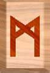
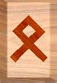

Los celtas procedían de la comarca comprendida entre el Rin, el Elba y el
Danubio, aproximadamente hace 9 siglos.
En el siglo XV AC, habitaban Europa central. Hacia el siglo IX AC ocuparon
tierras entre el Rin y el Sena y además atravesaron el canal de la Mancha.
Alrededor del año 500 AC penetraron en España, un siglo más tarde se
extendieron por todo el valle del Po en Italia y después invadieron el
Danubio medio y Bajo.
Llegaron a establecerse como imperio pero fue muy efímero, para ese tiempo
tenían grandes extensiones de territorio, pero terminaron separándose en
diversos pueblos. Los celtas insulares se establecieron en la Gran Bretaña
y hacia el siglo II AC eran dos grupos bien definidos: los goidelicos y los
bretones. La historia mítica nos cuenta otra versión, nos dice que la
primera de las razas que invaden Irlanda es la de Cessair que desembarca en
Irlanda para huir del diluvio.
No llegaron nunca a formar un estado unitario, pero sí grupos semifeudales
de defensa común. Hacia el año 400 AC este pueblo fue denominado galos, e
invadió el valle del Danubio y parte de Asia Menor. El pueblo romano
combatió fuertemente a los celtas haciendo que se dividan en numerosos
reinos.
Los celtas seguían una religión panteísta y misteriosa. Creían en la
reencarnación
otrasmigración de las almas, y en la existencia de otra vida
después de la muerte. Adoraban a los astros y a dioses superiores, que
consideraban con suficiente poder para influir en su destino, ya sea en
forma positiva o negativa. Practicaban su culto en las cumbres de las
montañas o en las espesuras de los bosques.
El culto estaba a cargo de los "druidas", sacerdotes que a la vez eran los
educadores de la juventud. Los monumentos llamados "Piedras Druídicas", se
dice que podrían haber tenido relación con la medida del tiempo, que puede
ser la ... representación de un calendario solar lunar. Al igual que diversos
grupos indígenas sus dioses tenían que ver con energías de la naturaleza.
Entre las prácticas de la superstición popular es famosa la recolección del
muérdago, al que se consideraba dotado de virtudes extraordinarias. También
el muérdago figura como planta sagrada en diversos textos religiosos. Y
podemos verlos decorando las mesas en la navidad cristiana. Los druidas se
presentan a menudo como sacerdotes de la religión celta, pero su papel
envolvía muchos aspectos más. Los druidas formaban una clase social
independiente, representando la clase intelectual de la sociedad.
Aunque también desempeñaban funciones religiosas, no se limitaban a ellas
ya que enseñaban el arte de la guerra, y de la utilización de los poderes
mágicos. Los druidas se responsabilizaban de la transmisión de
conocimientos en forma oral, y como tenían acceso a campos psíquicos que la
comunidad no, entonces todo lo que fuera premonitorio que podía ayudar lo
utilizaban como base para la guía espiritual.
Sabemos que todo aquello que no perteneciera al culto católico fue rotulado
como satánico, los druidas también están dentro de ese rótulo sectarista
impuesto por una religión que emitió ese juicio destructivo que viene desde
el miedo de la pérdida de poder sobre otros humanos.
También hubo mujeres druidas llamadas druidesas como por ejemplo Ceridwen
sobre la cual existe una leyenda conocida. Más allá del contenido de la
leyenda, podemos ver que para los celtas el sacerdocio también era
femenino.
Los druidas no tenían templos para profesar su culto, sino que hacían sus
ceremonias y rituales sobre altares de piedra, se dice que celebraban sus
ritos en los bosques cercanos a manantiales o pozos naturales.
El druida de la actualidad, está considerado como pagano y sucesor directo
del druida de la antigüedad. En 1781 se fundó una orden druida en
Inglaterra la cual se basa en ideales naturalistas que defienden la
tolerancia, el respeto humano y la dignidad.
Dios Odín y el lenguaje de las Runas
Dentro de la mitología nórdica Odin es considerado el Dios de la sabiduría,
de la guerra, de la vida, de la muerte, de la magia, de la poesía, de la
caza, en síntesis eran muchos los atributos que tenía este dios, por eso
para ellos era un dios supremo. Odin era considerado la evolución de la
deidad. Si bien está asociado al arte y la inspiración divina, también a
Odin se lo relacionaba con la furia y la locura.
Recordemos que sacrificó uno de sus ojos para de este modo acceder a la
sabiduría.
Padre de las valquirias, quienes eran enviadas por él para influir en las
batallas y obtener el resultado que deseaba, también les daba la tarea de
recoger a los guerreros heroicos muertos en batalla. Siendo uno de los
dioses más antiguos, creador del mundo y de los hombres, Odín es el señor
de la sabiduría, experto en todas las cosas desde el principio de los
tiempos.
Transmisor de todas las artes. Fue llamado Fjölnir y Fjölnsviòr que
significa “ser de gran sabiduría”, como así también Saor o Sannr que
significa “el que dice la verdad”, y Forni que “es el conocedor del
sacerdocio antiguo”.
Se dice que el dios Odín era conocedor de los nueve mundos, de sus orígenes
y del destino de los hombres y del universo. Se cuenta que el dios Odín se
aventuró hasta el pozo de Mimir, cerca de la tierra de los gigantes bajo la
apariencia de un viajero llamado ''Vegtamr''. Mimir quien vigilaba el pozo,
le pidió a Odín que sacrificara su ojo izquierdo para darle permiso de
beber del agua de su pozo, siendo esto un símbolo de su voluntad por
obtener el conocimiento.
Odín sacrificó su ojo y lo lanzó al fondo del pozo. Mientras bebía de las
aguas del pozo de Mimir, vislumbró el sufrimiento y los problemas que los
hombres y los dioses deberían soportar, pero también se dio cuenta de para
qué era necesario que sucedieran todas esas circunstancias.
Odín era conocedor del secreto de las runas.
Las runas son los símbolos del origen de todo conocimiento y poder. Se dice
que Odín viendo tanto desorden en su comunidad decidió colgarse en un árbol
sostenido de una rama por una cuerda que se ató a su tobillo, esta acción
la llevó a cabo para pedirle al dios creador de todo que le diera alguna
herramienta para ayudar a su pueblo. De ese modo luego de nueve días Dios
le entrega a Odín el lenguaje rúnico.
Runas
Las runas son letras del antiguo lenguaje nórdico, han sido encontradas
talladas en piedra, rocas y piezas de madera. Además de su uso como lengua
escrita, cada símbolo independiente fue utilizado para la evolución del
ser, ya que cada una contiene la esencia del conocimiento necesario para el
despertar espiritual.
Las runas también definidas como piedras que hablan contienen signos
mágicos de gran valor esotérico, y metafísico.
Se llama Futhark al lenguaje rúnico, el cual se divide en tres partes de
ocho caracteres, ya que la totalidad de letras o símbolos que lo componen
son 24. Existe otra runa que no tiene ningún símbolo, pero los contiene a
todos y representa a la energía del dios Odin.
Los grupos de 8 runas se llaman Aetir, el primer Aetir simboliza lo
femenino, la infancia, corresponde a la diosa Freyja y su runa es Fehu.
El segundo Aetir simboliza la naturaleza, la adolescencia, corresponde al
dios Heimdall y su grupo de ocho runas comienza con Hagalaz, simboliza el
puente entre los dioses y los hombres, su posición es neutral y mundana.
El tercer Aetir simboliza lo masculino, la edad adulta, comienza con la
runa Teiwaz, asociada a Tyr dios de la guerra.
A continuación está el dibujo de las 25 runas, obsérvalas, concéntrate y
siente cual es de ellas la que tiene un mensaje para este momento, para la
situación por la que preguntes, y luego lee el mensaje de la esencia de ese
símbolo rúnico.
Fehu
Fehu es la runa de la plenitud, ambiciones satisfechas, recompensas
recibidas, plenitud en los amores. Trae abundancia desde lo más sagrado y
divino hasta lo más mundano. Observar la relación con la abundancia, si se
necesitan para el bienestar, o para ejercer el poder sobre otros y así
alimentar al ego. Fehu pide que se conserven los logros. Alegrarse por el
bienestar que da Fehu y compartirlo. Fehu es la ardiente abundancia.
Uruz
Esta runa nos anticipa el final de una etapa y el comienzo de otra.
Crecimiento positivo, luego de la muerte de la etapa anterior, por eso
simboliza renacimiento. Fuerza y energía a caudales para el tránsito de
este tiempo serán dados para pasar, atravesar hacia la transformación del
ser. Uruz es el poder de modelar.
Thurisaz
Esta runa indica no actuar. Este símbolo fortalece la capacidad de espera,
no es un momento para toma de decisiones. Puertas que se abrirán pero es
preciso contemplar con paciencia. Thurisaz es la lucha sagrada.
Ansuz
Esta runa inicia el ciclo de transformación del ser. Transmite la urgencia
de tomar acción de conectarse con lo divino. Esta runa es la señal para
explorar las profundidades, las raíces de la vida, y experimentar el
manantial inagotable de lo divino. Simboliza también mensajes que llegan,
regalos, vínculos, relaciones nuevas, conexiones. Alerta y consciente de
los encuentros con personas especialmente de aquellas con mayor sabiduría.
Ansuz es el aliento de Votán.
Raido
Runa de comunicación, reunión, encuentro. Runa que nos asegura la evolución
mientras lo hagamos desde el poder interno de nuestro ser en unidad con la
divinidad. Pide la búsqueda y la continuidad en el perfeccionamiento del
ser. Raido es el anillo solar.
Kennaz
Runa de la apertura, de la claridad renovada, del esclarecimiento de la
oscuridad que venía opacando parte de la vida. Libertad para recibir la
alegría de dar sin pedir nada a cambio. Kano transmite claridad,
concentración, seriedad, necesarias para el comienzo de cualquier trabajo.
Apertura a la luz, y a la confianza. Kennaz es la antorcha que lleva la
luz.
Ehwaz
Movimientos, cambios, mudanzas, nueva vida. Runa de transición. Prepararse
para la buena fortuna que viene en camino. “Así como cultivo mi propia
naturaleza, así se desarrolla lo demás”. Ahwaz es la unión del caballo y el
jinete.
Manaz

Representa el sí mismo. El punto de partida de todo desarrollo espiritual
es uno mismo. Esta runa representa el ferviente deseo de cambiar y este es
el tiempo oportuno para hacerlo. “permanecer Humilde” y luego desde el
centro del ser decidir lo adecuado. “esfuérzate en vivir una vida ordinaria
de una forma extraordinaria”. Momento de gran crecimiento y rectificación
como antesala a la evolución. No buscar apoyos externos, solo el interior.
Mannaz es un ser humano entero.
Laguz
 Esta runa transmite fluidez de emociones, sentimientos y relaciones. Tiempo
de purificación y reevaluación. Reorganización moviendo los puntos de
encaje. Desarrollo de los poderes psíquicos, y conocimientos profundos.
Respetar la intuición que será muy fuerte. Laguz es una naciente de agua.
Esta runa transmite fluidez de emociones, sentimientos y relaciones. Tiempo
de purificación y reevaluación. Reorganización moviendo los puntos de
encaje. Desarrollo de los poderes psíquicos, y conocimientos profundos.
Respetar la intuición que será muy fuerte. Laguz es una naciente de agua.
Ingwaz
Fertilidad, nuevos comienzos exitosos. Esta runa está asociada con la luna,
la parte intuitiva de nuestra naturaleza, que nos lleva a la armonización y
a ajustarnos en la esfera de las relaciones personales. Necesidad de ser
amado. Tiempo de concluir todo lo que fue empezado para dar lugar a nuevos
comienzos, esto implica liberarse de lo anterior. Ingwaz es la semilla
adjunta.
Dagaz
Esta es la última runa de transformación del ser, se anuncia un cambio
mayor, trascendente en la evolución, completa transformación de actitud.
Confiar y entregarse totalmente aunque este momento requiera saltar al
aparente vacío. Luz absoluta. Dagaz es la meditación del alba.
Othila

Este es un tiempo de caminos separados. Viejas pieles deben ser removidas,
se anuncia una limpieza general. También en esta remoción se abandonarán
trabajos e incluso propiedades. Si se reciben herencias o bienes no serán
duraderos. Lo que se sugiere es hacer sin hacer nada, entregarse al gran
cambio que está en camino. Othila es el reino de la madre.
Eihwaz
Simboliza un tiempo de detención y espera en el camino. La paciencia es el
consejo que ofrece esta runa. No apresurarse, ni obsesionarse con nada,
todo debe fluir más que nunca. Ser previsor, antes de tomar acción.
Inconvenientes que se presentan, entrega al poder divino para su
resolución. No acción. Eihwaz es el árbol cósmico.
Perth
La iniciación, esta runa apunta hacia lo que está más allá, está al lado de
los cielos. Sorpresas y ganancias inesperadas. Perth otorga la luz para
detener el parloteo mental psíquico. Se asocia a esta runa con el ave fénix
como vehículo de gran transformación. Perth es la fuente de la memoria.
Elhaz
Esta runa trae el mensaje sobre todo en el plano de las emociones y es
control. Si aparece una emoción, vivirla, sentirla y comprenderla, no
taparla. No sucumbir en el camino del crecimiento ante emociones extremas,
sino relajarse y buscar el equilibrio. Este símbolo sirve de escudo
protector ante los desafíos y oportunidades que aparecerán manifestados en
lo externo. Elhaz es el acto de hacer lo sagrado.
Sowelo
 Sowelo trae integridad, fuerza de vida y energía del sol. Runa de gran
poder que nos da la fuerza del rayo, que estará disponible para usar en
cualquier situación. Gran luz. Sowelo es el rayo solar.
Sowelo trae integridad, fuerza de vida y energía del sol. Runa de gran
poder que nos da la fuerza del rayo, que estará disponible para usar en
cualquier situación. Gran luz. Sowelo es el rayo solar.
Teiwaz
Esta es la runa del guerrero espiritual, y está relacionada con la batalla
que libra el guerrero con sí mismo, con su ego para crecer. Teiwaz
transmite discernimiento para reconocer lo que no sirve, cortarlo con la
espada de luz y dejarlo ir. Esta runa pide paciencia, paciencia y también
paciencia, ya que moldeando el carácter es cuando se puede encontrar
realmente la salida. La conquista de uno mismo es necesaria y urgente, es
preciso llegar a lo profundo del ser. Cuando se pregunta por una pareja,
Teiwaz anuncia éxitos solo si se hace un trabajo conjunto de crecimiento
espiritual. Teiwaz es el cetro de poder.
Berkana
Es la runa del proceso de la vida, y del ciclo de auto transformación.
Crecimiento y fertilidad en la familia, y con uno mismo también. Tiempo de
florecer y madurar. Alejar resistencias y terminar el trabajo para que
florezca. Voluntad clara, controlada, y objetividad, modestia, paciencia, y
generosidad son necesarias para el logro de la fertilidad. El crecimiento
está asegurado. Berkana es la fertilidad.
Gebo
Elegir esta runa significa que de alguna forma se presentará una unión o
sociedad. Lo que es importante es no dejarse avasallar por esta unión, ya
que la base de toda unión es la igualdad y la independencia. Las uniones
son en todos los aspectos de la vida, sociales, sentimentales, familiares,
económicos, etc. la vida te da un regalo a través de Gebo. Gebo es el don.
Wunjo
Tiempo de cosecha de todo el trabajo realizado en la vida. Llegan regalos
esperados, ganancias materiales, mejoras en la vida emocional y en la
evolución espiritual. Nueva claridad, alegría, encuentro del cielo y la
tierra. Restauración del ser, alineado correctamente con sí mismo, a través
de la conciencia. Wunjo es la alegría.
Hagalaz
Cambios, libertad, inventiva, y liberación son los atributos de esta runa.
Existe una necesidad dentro de la psiquis de liberarse de una
identificación que no permite contactarse con la realidad. Runa de la
destrucción mental. Esta runa trae despertar a través del aparente fracaso.
Advertencia de pérdidas, o aparentes daños. Esta runa no es nada
superficial ya que cuanto más severa se la destrucción más significativos y
oportunos serán los requerimientos para el crecimiento porque esta es otra
de las runas de transformación del ser. El universo y tu propia alma te
están exigiendo lo que debes hacer y eso es crecer. Hagalaz es el cristal.
Nauthiz
Restricciones, dolores que se presentan, limitaciones del ego que se
manifiestan en uno y el entorno. Esta runa permite identificar lo oscuro de
uno mismo en donde el crecimiento está estancado, produciendo debilidades
que proyectamos negativamente a los demás. Las insatisfacciones no son sin
una razón, sino que hay un trabajo a realizar en el propio interior, es
preciso estar en calma y ser perseverante en la búsqueda de la causa para
su transformación. Momento de ajustes y pagos de viejas deudas. “cuando los
pescadores no pueden hacerse a la mar, aprovechan y reparan sus redes”.
Nauthiz es la prueba.
Isa
El invierno de la vida espiritual ha llegado, tiempo de enredos y visiones
poco claras. No habrá logros positivos por el momento. Se puede
experimentar falta de energía, cansancio, agobio. Tiempo de soledad para la
búsqueda de la fuente inagotable de energía que es el propio ser.
Permanecer consciente porque la semilla de lo nuevo está presente en la
cáscara de lo antiguo, la semilla del potencial que aún no se ha
manifestado. Confiar en el proceso y esperar con calma la primavera. Isa es
la voluntad concentrada.
Jera
Runa de resultados beneficiosos, aplicables a cualquier actividad o empresa
en la que se esté embarcado. Éxito luego de un tiempo de trabajo. La runa
también trae el mensaje de disfrutar de los logros pero seguir perseverando
en la tarea. Jera es la ley de alternancia.
Runa en blanco Odin
Es la nada y el todo, es luz y oscuridad en unidad. También simboliza la
presencia del dios Odin que apoyara con fuerzas revolucionarias de
transformación todo lo que queramos hacer. Odin es la totalidad que
contiene a todas las demás runas.